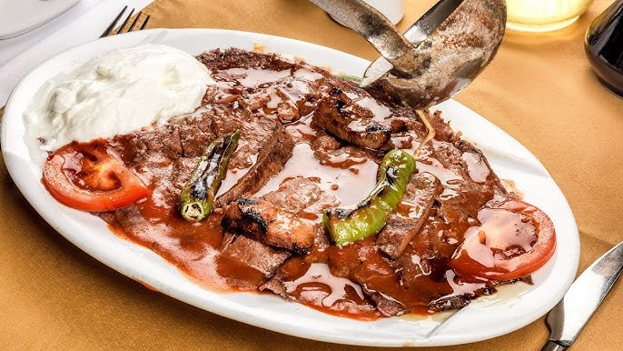
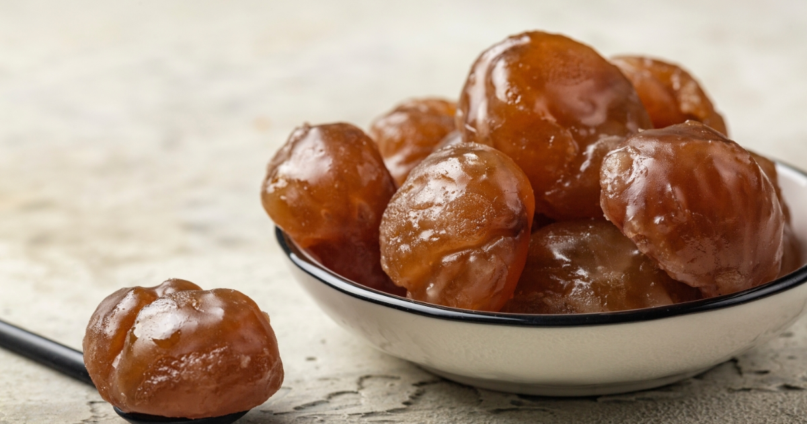
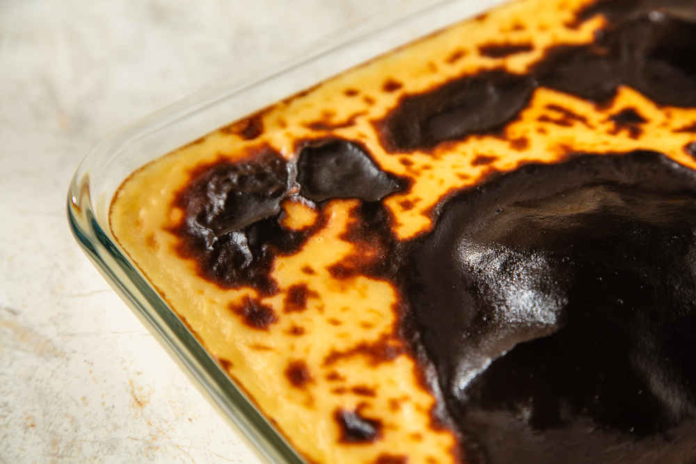

Bursa Mutfak Kültürü
Tarihin ve Lezzetin Buluşma Noktası

Bursa, Osmanlı'nın ilk başkenti olmasının yanı sıra zengin mutfak kültürüyle de öne çıkar. Et yemeklerinden tatlılara kadar her damağa hitap eden bir çeşitliliğe sahiptir.
İskender kebap, kestane şekeri ve süt helvası gibi meşhur lezzetler Bursa’yı gastronomi turizmi açısından özel bir yere koyar.
- Efsanevi kebaplar
- Meşhur tatlılar
- Doğal malzemeler
- Osmanlı mutfağından izler
Öne Çıkan Yemekler ve Mekan Önerileri

İskender Kebap
Bursa’nın en ünlü yemeği. Dönerin altına serilen pide, üzerine yoğurt, tereyağı ve domates sosu ile servis edilir.
Nerede Yenir?
- 📍 Kebapçı İskender
- 📍 Uludağ Kebapçısı
- 📍 Tarihi Kayhan Çarşısı

Kestane Şekeri
Bursa'nın simgesi haline gelmiş bu tatlı, haşlanmış kestanelerin şerbetle buluşmasıyla hazırlanır.
Nerede Yenir?
- 📍 Kafkas Kestane Şekeri
- 📍 Bursa Şekercisi
- 📍 Tatlıcı Tahir

Süt Helvası
Un, tereyağı, süt ve şekerle yapılan bu tatlı, fırınlanarak üzeri kızartılır ve sıcak servis edilir.
Nerede Yenir?
- 📍 Helvacı Hüseyin
- 📍 Yeşil Bursa Sofrası
- 📍 Fırın Helva Durağı